A tricolouring of the trefoil
AKSIOMA Knots
An interactive laboratory for knot theory
Version 1.0.0 · Windows · English and Albanian · Free software (GPL v3)
Abstract
AKSIOMA Knots shows a knot as a solid curve in space and computes what can be said about it. It holds all 12,965 prime knots with up to 13 crossings, accepts knots you draw or write as formulas, unknots them by crossing changes, forms connected sums, builds Seifert surfaces and sets exercises. This page introduces the program; the pictures and recordings are taken from it.

Knots
A knot is a closed curve in three-dimensional space that does not meet itself. Two knots are the same if one can be deformed into the other without the curve ever passing through itself. The circle is the unknot.
In the program: the knot list and Browse, in the top bar.
A mathematical knot has no loose ends, so it cannot be untied: the question is which knot it is. The program offers several ways to bring one onto the screen. There is a short list of classical knots, torus knots T(p, q) for p and q up to 20, curves written as formulas in a parameter t, and the table of prime knots from KnotInfo, searchable by name (8_19, 11n34, “Conway”) and filtered by crossing number and type.
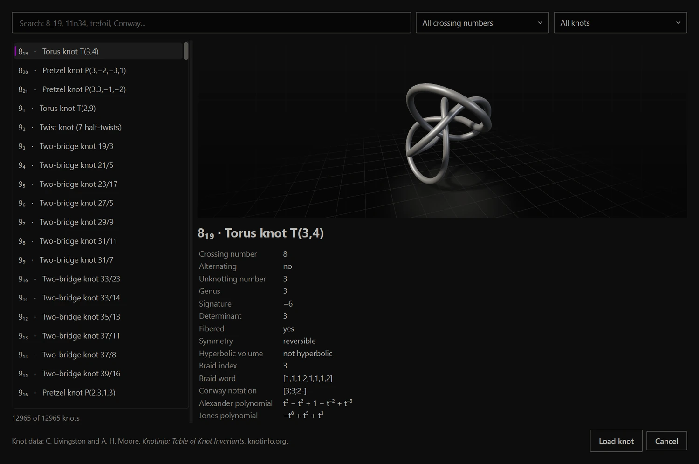

Invariants
To tell knots apart one computes invariants: quantities that do not change under deformation. If two curves give different values, they are different knots. The converse fails in general.
The panel also lists crossing number, unknotting number, genus, signature, determinant, symmetry, hyperbolic volume and braid index for knots in the table.
For each curve the program shows the Alexander polynomial Δ(t) and the Jones polynomial V(t). For the first three knots of the table:
| Knot | Δ(t) | V(t) | |Δ(−1)| |
|---|---|---|---|
| 01, unknot | 1 | 1 | 1 |
| 31, right-handed trefoil | t − 1 + t−1 | −t4 + t3 + t | 3 |
| 41, figure-eight | −t + 3 − t−1 | t2 − t + 1 − t−1 + t−2 | 5 |
For a curve you made yourself, the polynomials are computed from a projection and the knot is then looked up. The answer is worded with care:
The program writes “Probably the three-twist knot” and not “this is”, because two different knots can have equal polynomials.
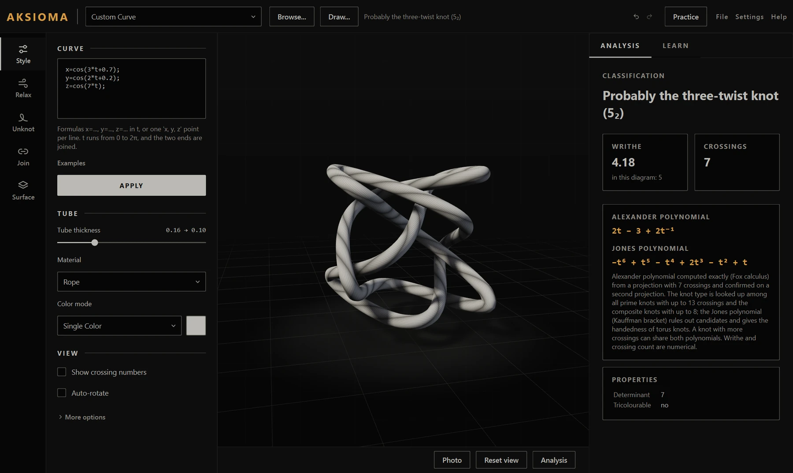
Diagrams
A diagram is a drawing of a knot in the plane that records, at every crossing, which strand passes over.
Two diagrams represent the same knot if and only if one can be turned into the other by deformations of the plane and a finite sequence of three local moves, called the Reidemeister moves I, II and III.
In the program: Draw. The areas where a move is possible are shaded and labelled R1, R2, R3.
You can draw a diagram with one stroke of the mouse. The crossings are found automatically, a click exchanges the over and under strands, and a Reidemeister move can be chosen and watched. The finished diagram becomes a knot in space, with all its invariants.

Unknotting
Every knot diagram can be turned into a diagram of the unknot by changing some of its crossings.
In the program: Unknot, Ctrl 3. Space plays and pauses.
The smallest number of crossing changes that undoes a knot is its unknotting number. The program carries out such a sequence: it chooses a viewpoint, draws the diagram, lets the two strands pass through each other at each chosen crossing, and pulls the result open into a circle. The number of changes it uses is an upper bound for the unknotting number. Each step can be inspected, with the diagram before and after.
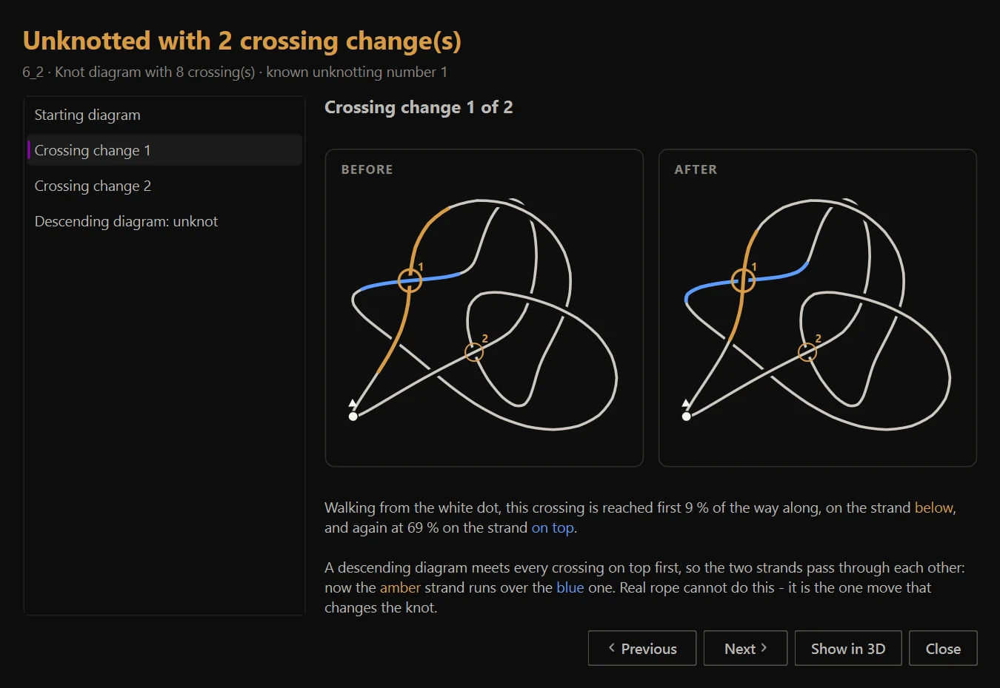
Connected sums
Cut a small arc from each of two knots K1 and K2 and join the loose ends by two new strands. The result is the connected sum K1 # K2. Its polynomials are products:
In the program: Join, Ctrl 4.
The construction is animated. Two trefoils of the same handedness give the granny knot; a trefoil and its mirror image give the square knot.
Seifert surfaces
Every knot is the boundary of a compact, connected, orientable surface.
Seifert’s algorithm produces such a surface from a diagram with c crossings. Smoothing every crossing leaves s disjoint circles; each is filled with a disk, and the disks are joined by one half-twisted band per crossing. The surface has genus
In the program: Surface, Ctrl 5. Click an entry of the matrix to see its two loops on the surface.
The program builds the surface in five stages and finally lets it contract, as a soap film would. It also gives the Seifert matrix V, from which the signature, the determinant and Δ(t) = det(V − tVT), up to a unit, are obtained.
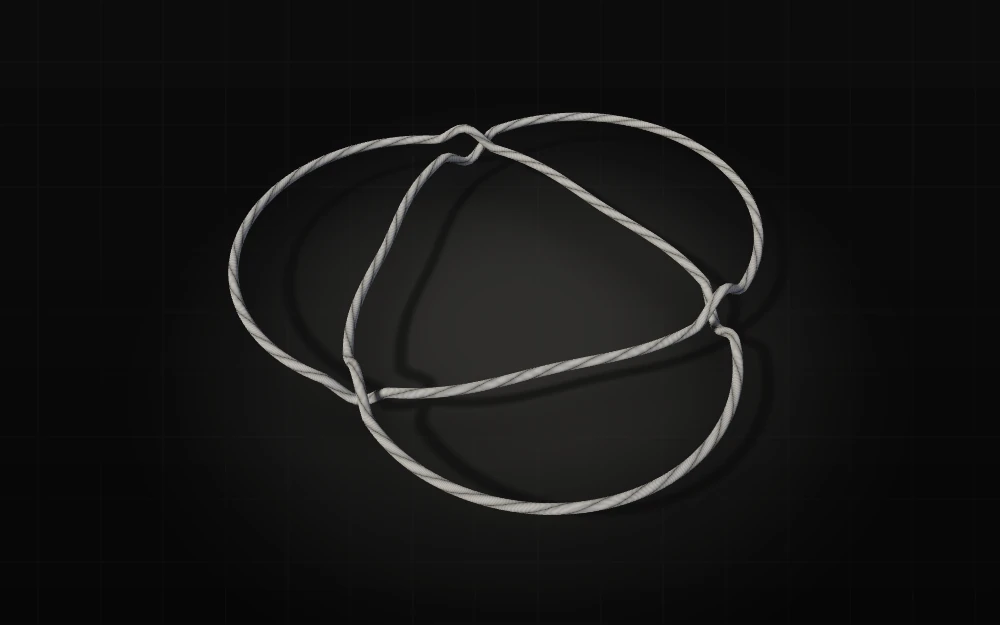

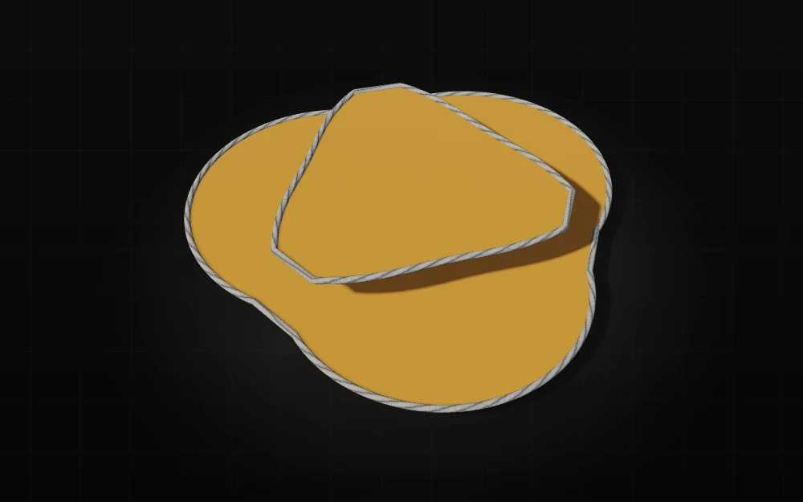
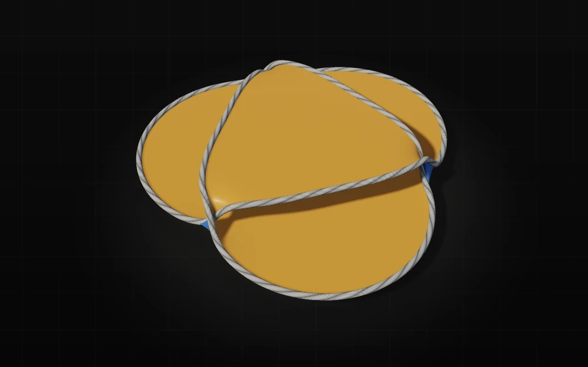
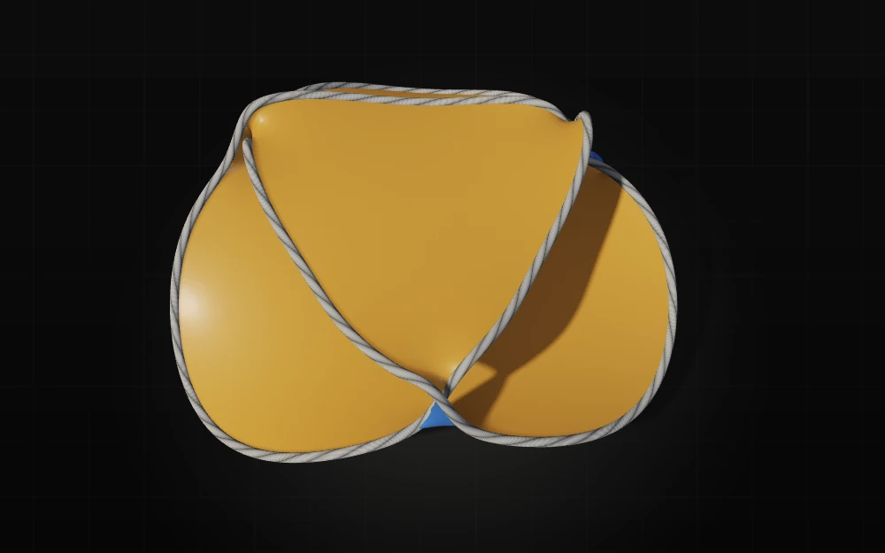
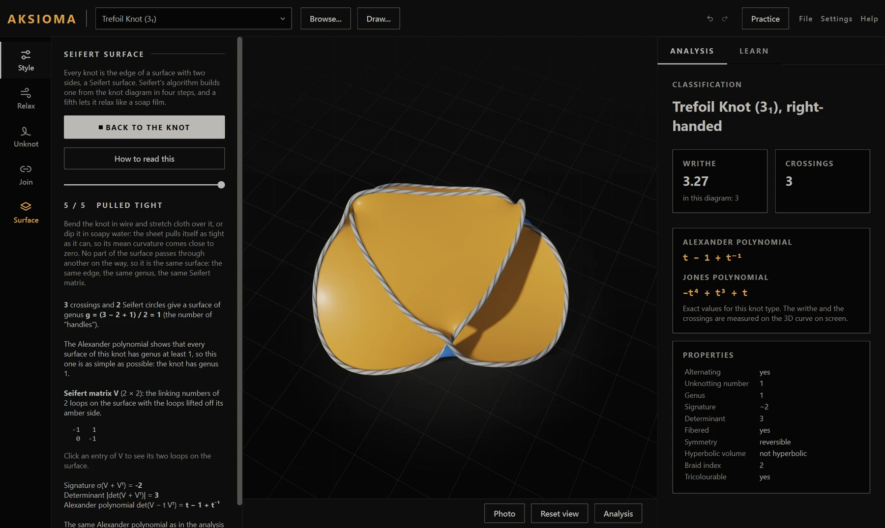
The knot as an object
Strands of real rope cannot pass through one another, and so rope preserves the knot type. The program uses this twice. Relax lets a curve, or a deliberately scrambled one, settle into an easier shape without ever letting it cross itself. Photo mode lays the knot down as rope under gravity, where it can be picked up, pushed under itself, cut and tied again.
In the program: Relax, Ctrl 2; the Photo button below the view.
Photo mode has four scenes: hemp rope on a garden table, a shoelace on boards, and a model railway by day or by night. On the railway every crossing is a bridge, and as the train runs the program writes out the Gauss code of the knot, the list of crossings in the order they are met, each marked over or under.
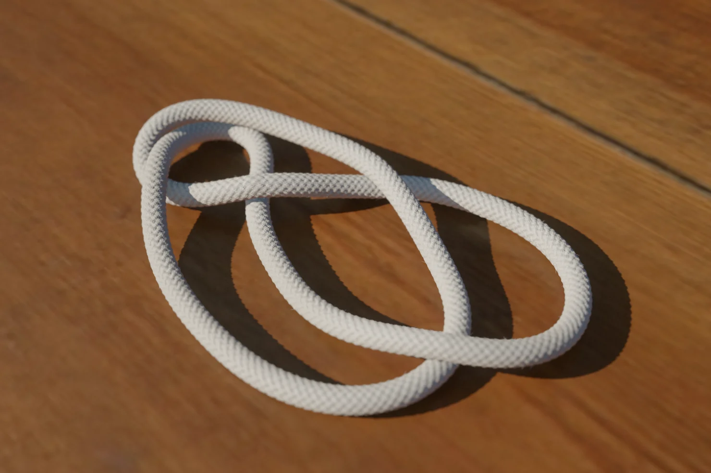
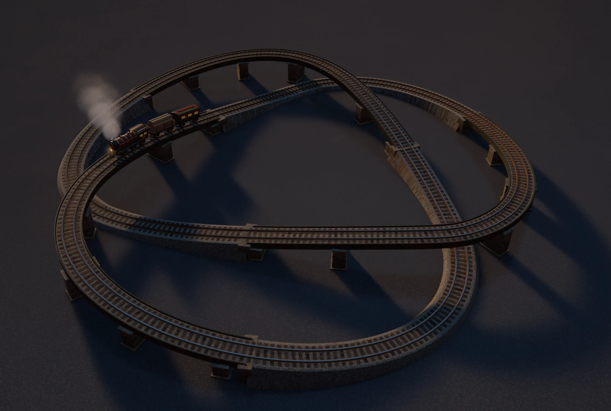
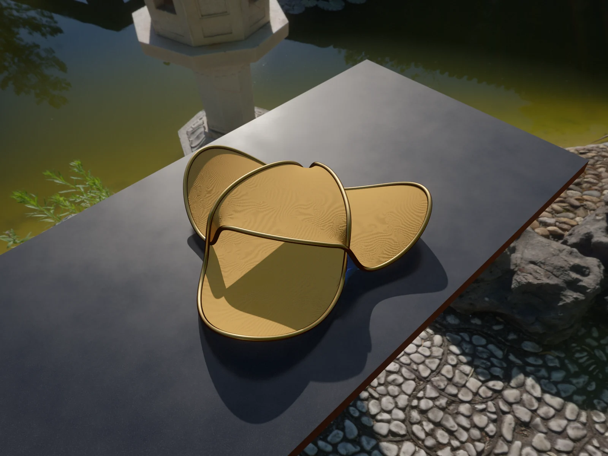
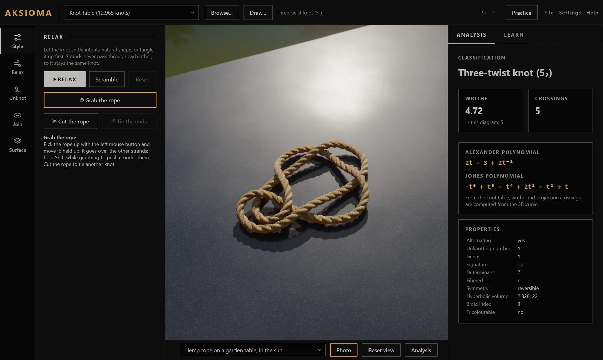
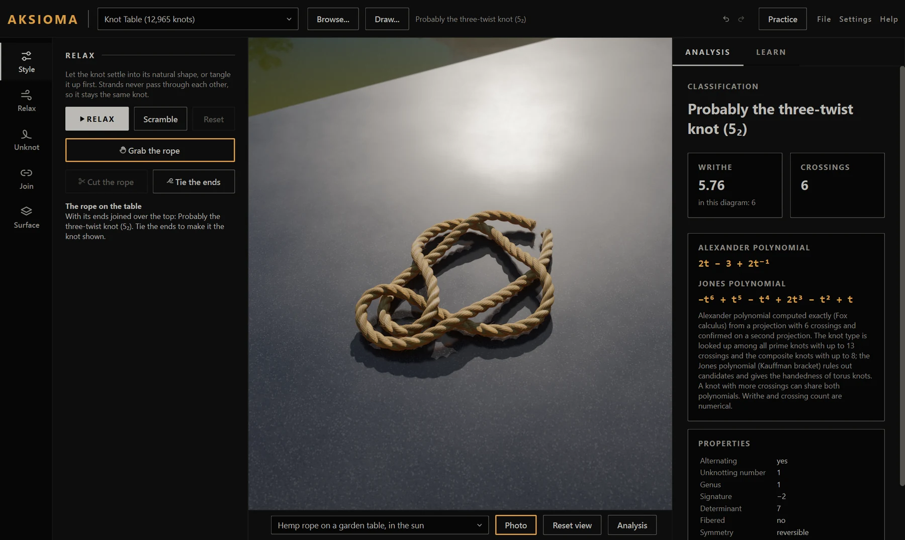
Exercises
A tricolouring gives each arc of a diagram one of three colours, so that at every crossing the three arcs are all alike or all different, and at least two colours occur.
Whether a diagram can be tricoloured does not change under Reidemeister moves. Hence a knot with a tricoloured diagram is not the unknot.
In the program: Practice, at the top right.
The practice window asks the student to find such colourings, or to decide that none exists, and to determine the sign of every crossing; the signs add up to the writhe. It checks each answer and gives hints, on the knot on screen, a knot chosen at random, or one the student draws.


Obtaining the program
AKSIOMA Knots is free software under the GNU General Public License, version 3. No account is needed.
| Version | 1.0.0 |
| System | Windows 10 or newer, 64-bit |
| Graphics | OpenGL 3.3 or newer |
| Installer | About 113 MB |
| Languages | English and Albanian (Shqip) |
Download the installer Source code
The installer is not signed, so Windows may show “Windows protected your PC”. Choose More info and then Run anyway. How to use the program is described in the manual; its file format and methods in the docs.
References
- J. W. Alexander, Topological invariants of knots and links, Trans. Amer. Math. Soc. 30 (1928), 275–306.
- V. F. R. Jones, A polynomial invariant for knots via von Neumann algebras, Bull. Amer. Math. Soc. 12 (1985), 103–111.
- C. Livingston and A. H. Moore, KnotInfo: Table of Knot Invariants. The source of the program’s knot table.
- K. Reidemeister, Elementare Begründung der Knotentheorie, Abh. Math. Sem. Univ. Hamburg 5 (1927), 24–32.
- H. Seifert, Über das Geschlecht von Knoten, Math. Ann. 110 (1935), 571–592.